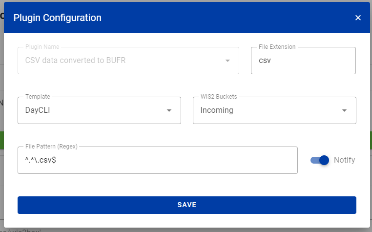

Converting CSV data to BUFR
Learning outcomes
By the end of this practical session, you will be able to:
- use the MinIO UI to upload input CSV data files and monitor the result
- know the format for CSV data for use with the default automatic weather station BUFR template
- use the dataset editor in the wis2box webapp to create a dataset for publishing DAYCLI messages
- know the format for CSV data for use with the DAYCLI BUFR template
- use wis2box webapp to validate and convert sample data for AWS stations to BUFR (optional)
Introduction
Comma-separated values (CSV) data files are often used for recording observational and other data in a tabular format. Most data loggers used to record sensor output are able to export the observations in delimited files, including in CSV. Similarly, when data are ingested into a database it is easy to export the required data in CSV formatted files. To aid the exchange of data originally stored in tabular data formats a CSV to BUFR converted has been implemented in the wis2box using the same software as for SYNOP to BUFR.
In this session you will learn about using csv2bufr converter in the wis2box for the following built-in templates:
- AWS (aws-template.json) : Mapping template for converting CSV data from simplified automatic weather station file to BUFR sequence 301150, 307096"
- DayCLI (daycli-template.json) : Mapping template for converting daily climate CSV data to BUFR sequence 307075
Preparation
Make sure the wis2box-stack has been started with python3 wis2box.py start
Make sure that you have a web browser open with the MinIO UI for your instance by going to http://<your-host>:9000
If you don't remember your MinIO credentials, you can find them in the wis2box.env file in the wis2box-1.0.0rc1 directory on your student VM.
Make sure that you have MQTT Explorer open and connected to your broker using the credentials everyone/everyone.
Exercise 1: Using csv2bufr with the 'AWS' template
The 'AWS' template provides a predefined mapping template to convert CSV data from AWS stations in support of the GBON reporting requirements.
The description of the AWS template can be found here.
Review the aws-example input data
Download the example for this exercise from the link below:
Open the file you downloaded in an editor and inspect the content:
Question
Examining the date, time and identify fields (WIGOS and traditional identifiers) what do you notice? How would today's date be represented?
Click to reveal answer
Each column contains a single piece of information. For example the date is split into year, month and day, mirroring how the data are stored in BUFR. Todays date would be split across the columns "year", "month" and "day". Similarly, the time needs to be split into "hour" and "minute" and the WIGOS station identifier into its respective components.
Question
Looking at the data file how are missing data encoded?
Click to reveal answer
Missing data within the file are represented by empty cells. In a CSV file this would be
encoded by ,,. Note that this is an empty cell and not encoded as a zero length string,
e.g. ,"",.
Missing data
It is recognized that data may be missing for a variety of reasons, whether due to sensor failure or the parameter not being observed. In these cases missing data can be encoded as per the above answer, the other data in the report remain valid.
Question
What are the WIGOS station identifiers for the stations reporting data in the example file? How is it defined in the input file?
Click to reveal answer
The WIGOS station identifier is defined by 4 separate columns in the file:
- wsi_series: WIGOS identifier series
- wsi_issuer: WIGOS issuer of identifier
- wsi_issue_number: WIGOS issue number
- wsi_local: WIGOS local identifier
The WIGOS station identifiers used in the example file are 0-20000-0-60351, 0-20000-0-60355 and 0-20000-0-60360.
Update the example file
Update the example file you downloaded to use today's date and time and change the WIGOS station identifiers to use stations you have registered in the wis2box-webapp.
Upload the data to MinIO and check the result
Navigate to the MinIO UI and log in using the credentials from the wis2box.env file.
Navigate to the wis2box-incoming and click the button "Create new path":

Create a new folder in the MinIO bucket that matches the dataset-id for the dataset you created with the template='weather/surface-weather-observations/synop':

Upload the example file you downloaded to the folder you created in the MinIO bucket:

Check the Grafana dashboard at http://<your-host>:3000 to see if there are any WARNINGS or ERRORS. If you see any, try to fix them and repeat the exercise.
Check the MQTT Explorer to see if you receive WIS2 data-notifications.
If you successfully ingested the data you should see 3 notifications in MQTT explorer on the topic origin/a/wis2/<centre-id>/data/weather/surface-weather-observations/synop for the 3 stations you reported data for:

Exercise 2 - Using the 'DayCLI' template
In the previous exercise we used the dataset you created with Data-type='weather/surface-weather-observations/synop', which has pre-configured the CSV to BUFR conversion template to the AWS template.
In the next exercise we will use the 'DayCLI' template to convert daily climate data to BUFR.
The description of the DAYCLI template can be found here.
About the DAYCLI template
Please note that the DAYCLI BUFR sequence will be updated during 2025 to include additional information and revised QC flags. The DAYCLI template included the wis2box will be updated to reflect these changes. WMO will communicate when the wis2box-software is updated to include the new DAYCLI template, to allow users to update their systems accordingly.
Creating a wis2box dataset of publishing DAYCLI messages
Go to the dataset editor in the wis2box-webapp and create a new dataset. Use the same centre-id as in the previous practical sessions and select Data Type='climate/surface-based-observations/daily':

Click "CONTINUE TO FORM" and add a description for your dataset, set the bounding box and provide the contact information for the dataset. Once you are done filling out all the sections, click 'VALIDATE FORM' and check the form.
Review the data-plugins for the datasets. Click on "UPDATE" next to the plugin with name "CSV data converted to BUFR" and you will see the template is set to DayCLI:

Close the plugin configuration and submit the form using the authentication token you created in the previous practical session.
You should know have a second dataset in the wis2box-webapp that is configured to use the DAYCLI template for converting CSV data to BUFR.
Review the daycli-example input data
Download the example for this exercise from the link below:
Open the file you downloaded in an editor and inspect the content:
Question
What additional variables are included in the daycli template?
Click to reveal answer
The daycli template includes important metadata on the instrument siting and measurement quality classifications for temperature and humidity, quality control flags and information on how the daily average temperature has been calculated.
Update the example file
The example file contains one row of data for each day in a month, and reports data for one station. Update the example file you downloaded to use today's date and time and change the WIGOS station identifiers to use a station you have registered in the wis2box-webapp.
Upload the data to MinIO and check the result
As before, you will need to upload the data to the 'wis2box-incoming' bucket in MinIO to be processed by the csv2bufr converter. This time you will need to create a new folder in the MinIO bucket that matches the dataset-id for the dataset you created with the template='climate/surface-based-observations/daily' which will be different from the dataset-id you used in the previous exercise:

After uploading the data check there are no WARNINGS or ERRORS in the Grafana dashboard and check the MQTT Explorer to see if you receive WIS2 data-notifications.
If you successfully ingested the data you should see 30 notifications in MQTT explorer on the topic origin/a/wis2/<centre-id>/data/climate/surface-based-observations/daily for the 30 days in the month you reported data for:

Exercise 3 - using the CSV-form in wis2box-webapp (optional)
The wis2box web-application provides an interface for uploading CSV data and converting it to BUFR before publishing it to the WIS2, using the AWS template.
The use of this form is intended for debugging and validation purposes, the recommended submission method for publishing data from Automated Weather Stations is to a setup a process that automatically uploads the data to the MinIO bucket.
Using the CSV Form in the wis2box web-application
Navigate to CSV Form on the the wis2box web-application
(http://<your-host-name>/wis2box-webapp/csv2bufr_form).
Use the file aws-example.csv for this exercise.
You should now be able to click next to preview and validate the file.

Clicking the next button loads the file into the browser and validates the contents against a predefined schema. No data has yet been converted or published. On the preview / validate tab you should be presented with a list of warnings about missing data but in this exercise these can be ignored.

Click next to proceed and you will be asked to provide a dataset-id for the data to be published. Select the dataset-id you create previously and click next.
You should now be on an authorization page where you will be asked to enter the processes/wis2box
token you have previously created. Enter this token and click the "Publish on WIS2" toggle to ensure
"Publish to WIS2" is selected (see screenshot below).

Click next to transform to BUFR and publish, you should then see the following screen:
Clicking the down arrow tn the right of Output BUFR files should reveal the Download and Inspect buttons.
Click inspect to view the data and confirm the values are as expected.

Debugging invalid input data
In this exercise we will examine what happens with invalid input data. Download the next example file by clicking the link below. This contains the same data as the first file but with the empty columns removed. Examine the file and confirm which columns have been removed and then follow the same process to convert the data to BUFR.
Question
With the columns missing from the file were you able to convert the data to BUFR? Did you notice any change to the warnings on the validation page?
Click to reveal answer
You should have still been able to convert the data to BUFR but the warning messages will have been updated to indicate that the columns were missing completely rather than containing a missing value.
In this next example an additional column has been added to the CSV file.
Question
Without uploading or submitting the file can you predict what will happen when you do?
Now upload and confirm whether your prediction was correct.
Click to reveal answer
When the file is validated you should now receive a warning that the column index
is not found in the schema and that the data will be skipped. You should be able to click
through and convert to BUFR as with the previous example.
In the final example in this exercise the data has been modified. Examine the contents of the CSV file.
Question
What has changed in the file and what do you think will happen?
Now upload the file and confirm whether you were correct.
Click to real answer
The pressure fields have been converted from Pa to hPa in the input data. However, the CSV to BUFR converter expects the same units as BUFR (Pa) and, as a result, these fields fail the validation due to being out of range. You should be able to edit the CSV to correct the issue and to resubmit the data by returning to the first screen and re-uploading.
Hint
The wis2box web-application can be used to test and validate sample data for the automated workflow. This will identify some common issues, such as the incorrect units (hPa vs Pa and C vs K) and missing columns. Care should be taken that the units in the CSV data match those indicated above.
Conclusion
Congratulations
In this practical session you have learned:
- about the csv2bufr converter in the wis2box
- how to use the AWS and DAYCLI templates to convert CSV data to BUFR
- and how to validate a sample CSV file using the csv2bufr form in the wis2box web-application
Next steps
The csv2bufr converter used in the wis2box has been designed to be configurable for use with any row based tabular data. The column names, delimiters, quotation style and limited quality control can all be configured according to user needs. In this session you have used the built-in AWS and daycli templates but you can develop your own templates for other data types as required.